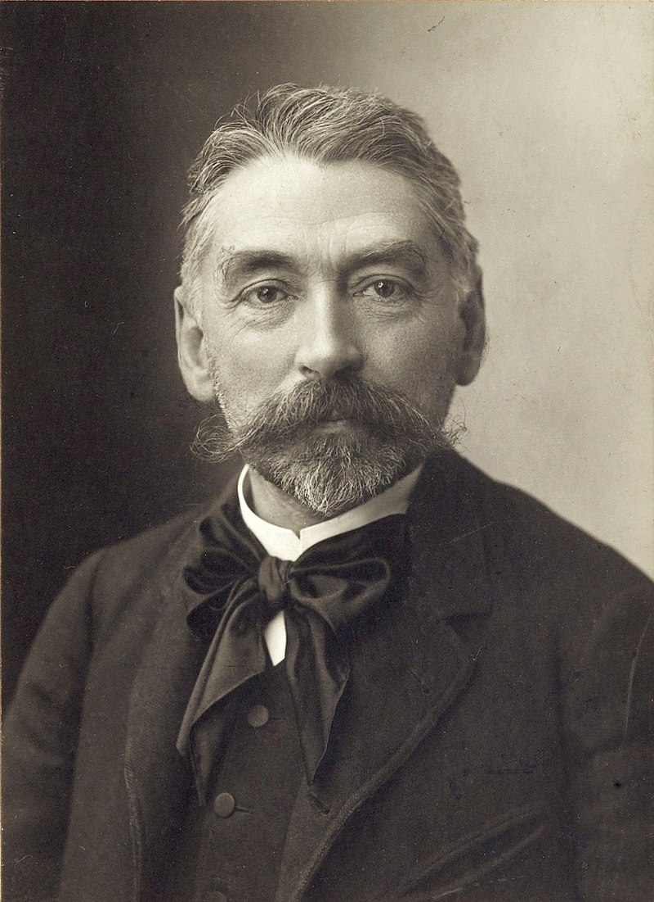

MALLARMÉ

.(Étienne Mallarmé,) Stéphane Mallarmé (1842-1898).
Tất cả bắt đầu trong vòng bí mật, giống như một giáo phái. Họ chuyền tay nhau những khúc sonate của ông, Thần điền dã, và những bài thơ của ông tản đi khắp nơi giống như những kẻ được thụ phép trao đổi cho nhau bùa chú.
Trong số những tác phẩm tầm tầm mọc như cây trường xuân quanh cột trụ Mallarmé (1842-1898) “sự tối tăm” của thơ ông không phải là cái ít dai dẳng nhất. Người ta cũng nói như vậy về phim của Godard. Điều lạ là người ta có thể hiểu hết về một bộ phim của Claude Zidi, mà ở đấy thực ra họ chả hiểu gì cả. Tuy thế quả như ông nói rằng “ý tưởng tạo ra âm nhạc” - chính trong sự biến hình mang đậm thuật giả kim và bí truyền này chứa đựng toàn bộ sức mạnh của thơ ông - làm rung lên trong người ta những thớ thịt ít khi được đụng chạm tới.
Ngoài điều đó, tại sao thơ của Mallarmé lại “tối tăm”? Bởi vì sự so sánh đã nhường bước cho hoán dụ chăng? Vì, nói tóm lại, khuôn mặt tự nhòa đi sau hình tượng chăng? Phần nào là vậy. Nhưng Baudelaire cũng mang chất hoán dụ, nhưng lại rõ ràng. Còn Mallarmé sở dĩ khó hiểu xem ra vì ông viết theo độ nhìn chếch, mãi về sau mới giải thích cái nói ra từ ban đầu, và ngụy trang dưới mặt giấy như những sợi chỉ của bức thêu những tương quan lôgích và liên tục.
Thí dụ hai câu thơ:
Mảnh lụa nào mang nhựa thơm của thời gian
Nơi con quái vật Chimère gục ngã
Đấy là thứ lụa gì? Lá cờ đấy thôi! Nhưng làm sao biết được? Điều này cần phải đọc cuốn sách tuyệt vời của Paul BénichouTheo Mallarmé trong đó tác giả giải thích những chỗ khó, từ khúc sonnet này đến khúc sonnet khác của Mallarmé. Hoặc giả cần đọc đi đọc lại và thấy sự giải thích cách 4 câu thơ phía dưới: Những lỗ thủng của lá cờ trầm tư…
Năm 1891, Mallarmé có nói: “Gọi tên một sự vật là đã tước đi ba phần từ sự hưởng thụ thơ, cái khiến cho người ta phải đoán ra từ từ: cái khơi gợi chính là mơ mộng”. Ông còn nói: “Vẽ ra không phải sự vật mà cái tác động nó sản sinh ra”. Về cảm xúc và thưởng thức, điều đó không phải bằng việc giải thích, phán truyền, hay tống đạt. Ông nói: “Tôi làm nhạc, và còn cả triệu thế giới bên kia được sinh ra một cách kỳ diệu bằng cách sắp xếp những con chữ… Tôi không hề tối tăm vào lúc người ta đọc thơ tôi để tìm kiếm cái mà tôi đã nói ra trước đó”.
Mallarmé là nhà thơ siêu hình. Ông sống vào buổi kết thúc một thế kỷ dữ dằn và trần tục (tóm lại, giống thời đại chúng ta). Ông đã kinh qua bệnh loạn trí nhẹ, khó hiểu, kỳ cục và rút ra từ đấy những vẻ lịch sự quá quắt, những chiếc quạt, những lời khen, những nụ cười. Ông đã suýt tự sát đến trăm lần, và điều đó chỉ có ông và kẻ đồng hành chính của ông là hư vô chứng kiến.
Mallarmé có một nét hài hước sắc bén, và còn có một tham vọng mang đậm chất khủng bố. Thơ là quả bom nổ chậm, một thứ thuốc độc ghê gớm, một sự khủng bố đối với nghề viết phóng sự và với đức tin nói chung (vào Chúa trời và xã hội, vào thế giới). Người ta tự hỏi mà không hiểu ra được tại sao chúng ta lại tiếp tục kể ra những câu chuyện, đến xem bộ phim sắp chiếu, theo dõi thị trường chứng khoán. Nhưng đối với Mallarmé – người mà người ta nói với chúng ta rằng ông ấy điên đấy – thì thơ ông biểu hiện loại hoạt động cao cả nhất, cổ kính nhất và kỳ diệu nhất của trí óc con người. Trong bộ ba thiên tài, Lautréamont, Rimbaud, Mallarmé (và có thể thêm vào đó Verlaine) Mallarmé là người “liêm khiết” nhất, có lẽ là kẻ nguy hiểm nhất đối với các thể chế. Người ta đã nghi ngờ tại sao con người chân chính tuyệt vời đó, con người kín đáo, vị giáo sư tiếng Anh, lại tiếp trong nhà mình những người trẻ tuổi như Gide, Valéry, Claudel để nói những chuyện bâng quơ mơ hồ? Phải chăng ông, dưới những phong thái thích hợp, có những đồng tình có tính chất vô chính phủ, giống như Fénéon?
Mallarmé tinh tế, tự thích nghi và hóa trang. Ông là thư ký của một thời đại đã thanh trừng Baudelaire, một thiên tài. Ông từng viết: “Tôi coi thời đại hiện nay đối với nhà thơ là một thời không còn vương pháp chẳng nên dính líu đến chút nào…”.
Người ta thấy thiên hạ đến càng đông vào những ngày thứ ba tại phố Roma. Trong triển lãm vào dịp 100 năm ngày mất của ông tại bảo tàng Sens, có nhiều bức ảnh chụp Mallarmé ở nhà mình, bên cạnh chiếc lò sưởi nổi tiếng hay chiếc ghế bành mà ông ngồi tựa lưng, và những buổi tối có bao con người châu tuần quanh ông: Villers, Paul Fort, Vehaeren, Maeterlinck, Whistler, Gauguin, Verlaine, Barrès, và sau đấy có Fénéon, Gide, Laforgue, Vielé-Griffin, Taihade, Schowob, Wilde, Jarry, Debussy, Valéry, Claudel…
Mallarmé đã từng là giáo sư tiếng Anh trong gần 30 năm. Con gái ông Geneviève (hay gọi tắt là “Vève”) trở thành thư ký riêng cho ông, thường theo ông đến ngôi biệt thự Valvins nằm trên bờ sông Seine, gần Fontainebleau. Ở đấy người ta thấy phòng ông trang bị những đồ gỗ kiểu thời vua Louis 16 ở vùng quê. Trên một cửa kính, hiện lên cái bóng của ông. Còn đây là chiếc quạt nổi tiếng của cô Mallarmé “de Vève”, khảm trai viền vàng (năm 1884) trên đó người cha cô đã viết ra bài tứ tuyệt tuyệt vời này:
Con có nghĩ là thiên đường độc đoán
Đến một nụ cười cũng bị liệm đi
Chỉ hiện ra ở đầu góc mép
Cuối nếp môi mím chặt tức thì.
Mallarmé đã sống ở đây vào cuối đời. Ông làm vườn, viết lách và qua đời ở đấy. Phía trước là những cây ngâu, cây dẻ tây, và cách xa đó mấy bước chân là con sông Seine lặng lẽ. Đằng sau nhà là một khu vườn xinh xắn hình chữ nhật có tường vây, những thảm cỏ, những cây táo, hoa và khóm cây.
Ông viết vở kịch Buổi chiều của Thần điền dã, bị Nhà hát hài kịch Pháp từ chối nhưng Debussy chấp nhận. Ông viếtHérodiate mà không bao giờ hoàn thành: “Ở đấy có một câu nói gồm 22 câu thơ, xoay quanh mỗi một động từ”. Cái công việc thể hiện đó là một cái gì trên sức con người và phải cải tạo lại sân khấu nữa mà vẫn chưa có thể thỏa mãn, nhưng Maeterlinck lại tán thưởng. Vào thời gian viết hai tác phẩm đó, ông làm bài thơ nổi tiếng Bản sonate tự trào.
Ở Mallarmé, lúc thì viết lách khó khăn nhưng lúc thì lại thật dồi dào. Bao giờ cũng mơ mộng. Ông thoát ra khỏi sự bất lực bằng công việc, một phương thuốc thần diệu. Tác phẩm càng kỳ dị thì càng không thành công: Igitur, Faune rồi Livre (chỉ mới ở dạng ghi chép), nhưng tất cả đều bị ám ảnh bởi ngôn từ của ông.
Một khủng hoảng to lớn đến với ông là khi đứa con trai Anatole bị ốm nặng, kéo dài sự hấp hối rồi chết.
Khi sự nổi tiếng đến vào năm 1891, đâu đâu người ta cũng chào mời ông. Những cuộc họp ở Bỉ, rồi ở Anh. Trong các trường Cao đẳng, người ta chờ đợi ông như một Chúa cứu thế. Nhưng cuối cùng người ta nhìn ông mà không thể tin được và bối rối như đứng trước một con vật vườn thú…
Ngày nay, từ Bảo tàng Orsay ở Paris đến ngôi lâu đài ở Sens, từ Tournon-sur-Rhône đến thành phố Glasgow ở Anh, đâu đâu người ta cũng tôn vinh “kẻ cuồng chữ” này.
Khi sự nổi tiếng đến vào năm 1891, đâu đâu người ta cũng chào mời ông. Những cuộc họp ở Bỉ, rồi ở Anh. Trong các trường Cao đẳng, người ta chờ đợi ông như một Chúa cứu thế. Nhưng cuối cùng người ta nhìn ông mà không thể tin được và bối rối như đứng trước một con vật vườn thú…
Ngày nay, từ Bảo tàng Orsay ở Paris đến ngôi lâu đài ở Sens, từ Tournon-sur-Rhône đến thành phố Glasgow ở Anh, đâu đâu người ta cũng tôn vinh “kẻ cuồng chữ” này.